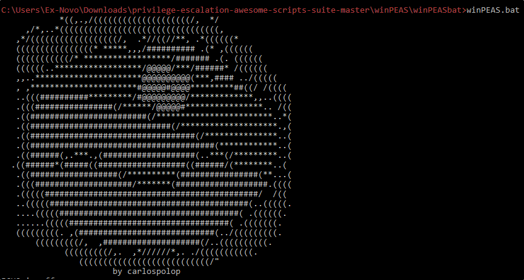

First tool we can try is winPEAS:
We can use the .bat version or compile it and run the .exe version
(The .bat script require Net.4)
If you read the README, you can set the colors to immediately see the vulnerability:


2)
Another tool to check is PowerUp:
Remember to run the powershell bypassing the execution policy